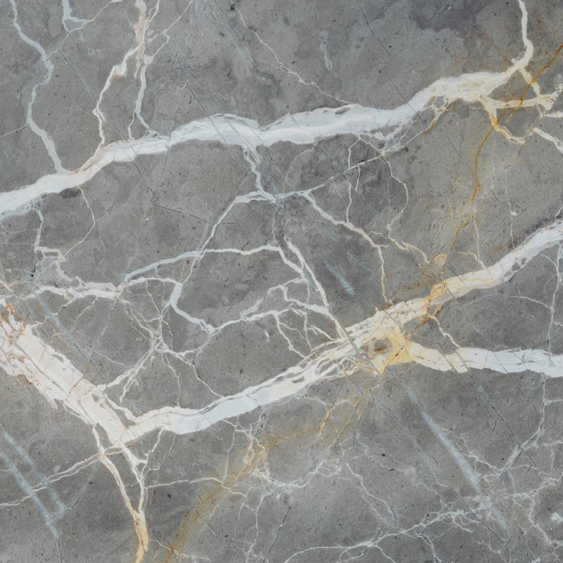
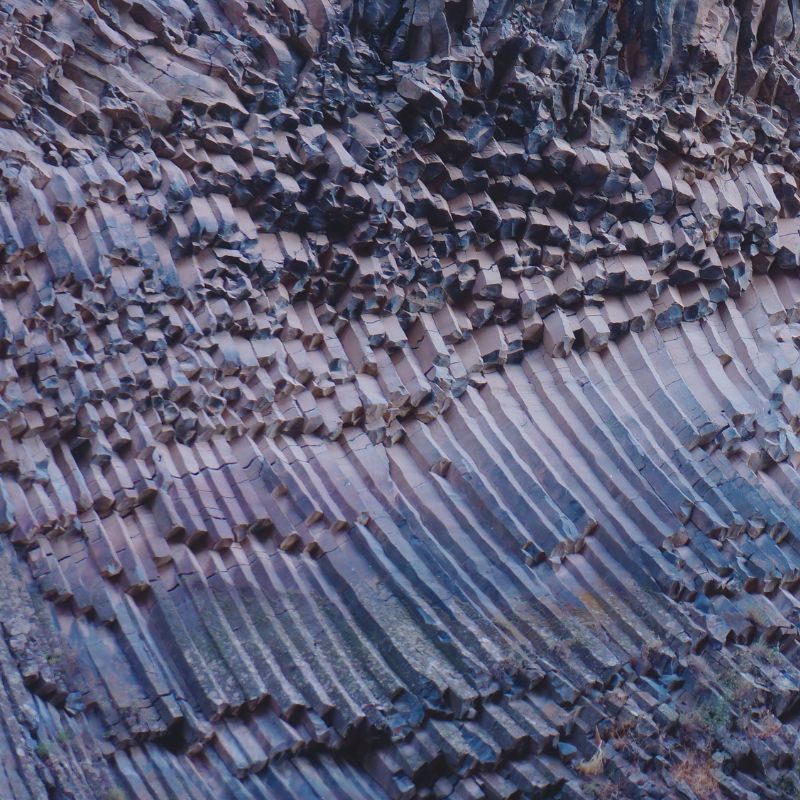

Get involved
We would like to hear from you.

Built for you
For industry
If you are in construction, glass, technology or manufacturing, the Coalition shows you early where expectations are heading. It also gives you a hand in shaping them. You contribute what you know about how these operations run. You get back guidance that reflects operational reality.
For researchers and civil society
If you work on resource governance, biodiversity, social performance or circular economy, the Coalition is a place to connect that expertise to real supply chains. You can test ideas against operational reality, influence practice and help build something that lasts.
For policymakers and foundations
The Coalition offers a way to co-design research and action agendas with practical influence built in from the start. It connects policy to practice, and turns foresight into approaches that work for materials governance.
Four ways to work with us
Become a Member
Membership makes your commitment to these materials visible. It also gives you a hand in defining what responsible practice means for them.
Your organisation can join as a Voting Member or as a Supporter member. Voting Members hold a formal role in governance, including the right to vote at the Annual General Meeting. Supporter members take part fully in the Coalition's activities and benefits, without the formal governance role.
- A credible commitment signal. The only credible commitment signal that exists for these materials, visible to clients, suppliers and regulators.
- The materials protocols. The operational detail that turns the framework into practice in your own supply chain. The framework will be published open access. The protocols are for Members.
- A seat at the table. A hand in shaping what good looks like across all five materials groupings.
Organisations that join during 2026 are registered as Founders. Founders hold a permanent seat at the Advisory Council, first choice of the early demonstration projects with a say in scoping them, and recognition for early action on responsible sand and silicates. The Founder year closes at the end of 2026.
Work with us directly
If you are working through sand and silicates risks or opportunities in your supply chain, operations or policy work, we can help. You do not need to be a Member to start the conversation. Where the work needs sustained input we scope it as a commission, and what we earn goes back into the workplan.
We also take on facilitation and event design for strategic dialogues. Training for consultants and standards bodies, and our data platform and strategic intelligence products, are in development.
Partner with us on projects
Collaborate with the Coalition on demonstration projects, targeted research or regional pilots. Whether you are a standards body, research institution or industry partner, tell us what you have in mind and we will tell you what we can bring.
Research organisations can also join as Members, at a fee scaled to operating budget. Partnership suits a specific funded project. Membership suits an ongoing role in setting the agenda.
Subscribe
If your organisation wants to get to know us before joining, subscription is the way in. Subscribers come to some meetings, attend webinars, and receive access to Coalition news and to insights from projects and demonstrations. You receive a Subscriber logo for your website, and an introduction to the community.
Subscribers are not Members. Subscription carries no vote, no access to the data platform and no Coalition support for responsibility claims. The annual fee is AUD 4,000.
2026 to 2028: what to expect
The Coalition's programme of work runs across guidance, shared knowledge and demonstration projects. Whichever way you come in, this is what we are building over the next three years.
- Build the Coalition as an independent organisation. Practising sound governance across the Board of Directors, Advisory Council and Secretariat, and onboarding 2026 Founders and 2027 Members as the Coalition takes shape.
- Define what responsible means in practice. We deliver the first version of the responsible sourcing framework across the five materials groupings, built on the six step due diligence process, being the OECD Due Diligence Guidance with remedy added as Step 6.
- Develop the materials-specific protocols. Focused working groups build a shared, evidence-based view of what good looks like for each grouping, from aggregates and industrial sands to natural stone, high-purity materials and alternatives, cross-referenced against existing standards.
- Take responsible practice into the field. We move from definition to demonstration, scoping and running pilots so responsible conduct is shown in real supply chains and not only set out on paper.
- Grow awareness and connect the community. Sustained outreach, thought leadership and speaking materials for Members and partners. The Coalition is present at key industry and policy events through the year, including the OreSand Summit and our Advisory Council gathering.
Where to start
Get in touch whether you are thinking about membership, a project or something else. We will work out the best way forward together.
Get progress updates
Occasional updates on the Coalition's work, with more depth than we share on LinkedIn.
